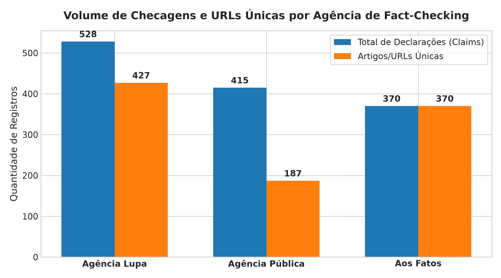
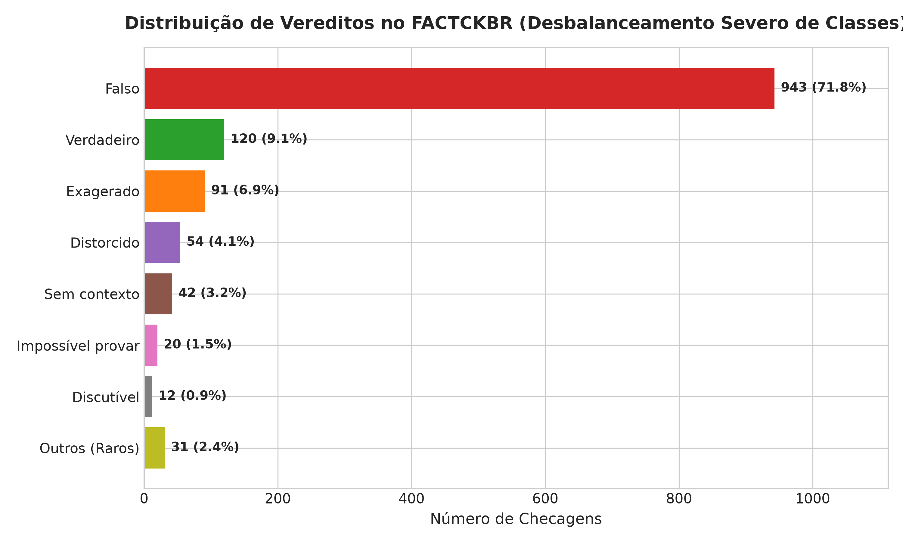
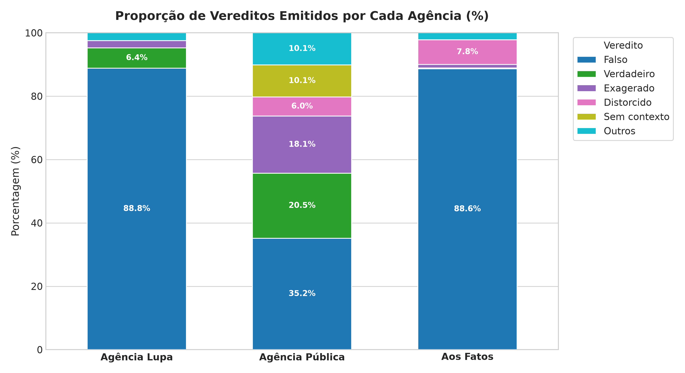
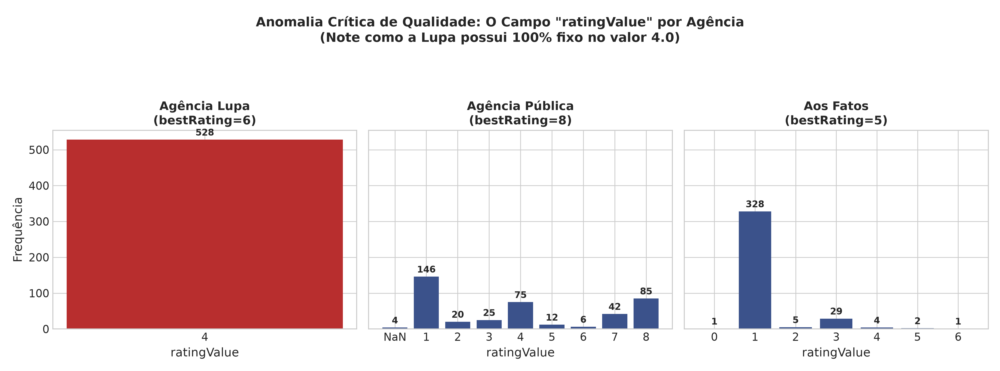
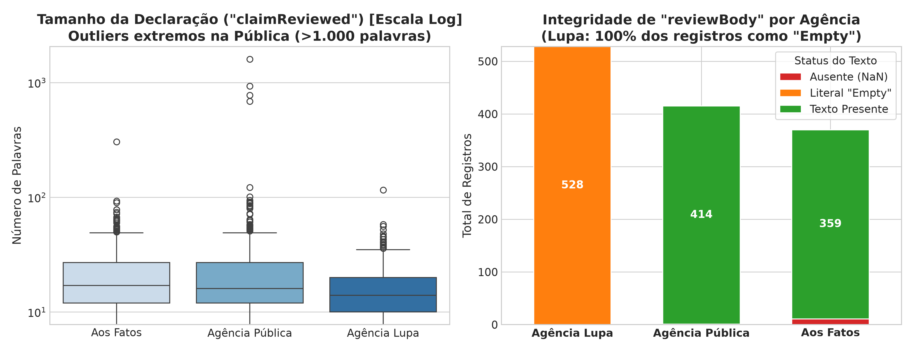
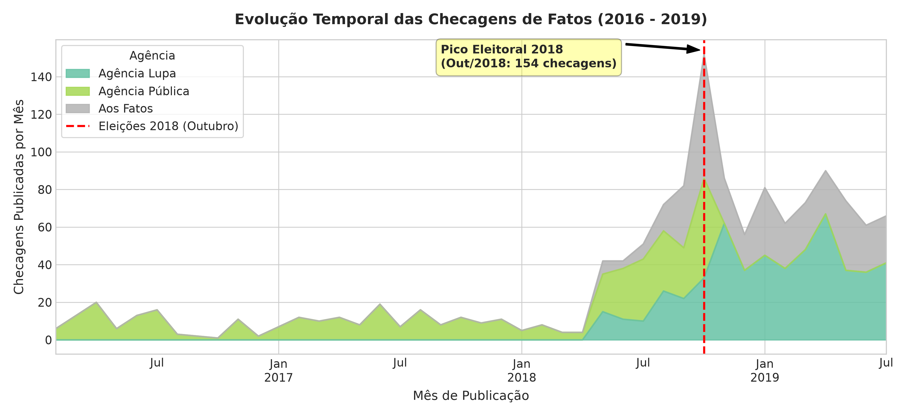
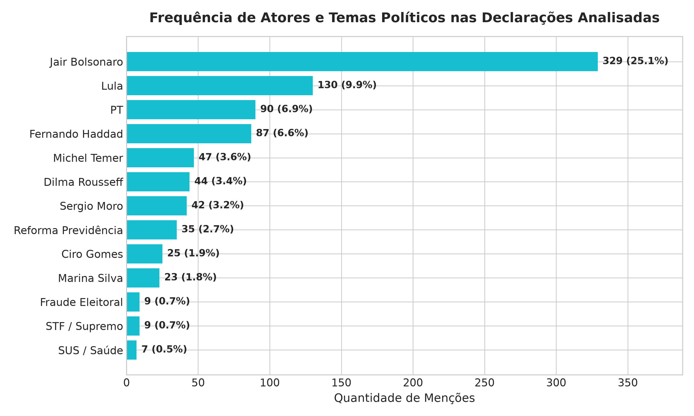

Compreensão estrutural, padrões estatísticos, auditoria de qualidade e oportunidades analíticas do dataset de fact-checking da política brasileira.
O dataset foi construído a partir das 3 maiores agências profissionais de fact-checking do Brasil: Agência Lupa, Agência Pública e Aos Fatos.

Avaliação das categorias textuais atribuídas como veredito das checagens (campo alternativeName normalizado).


Falso. Enquanto Aos Fatos concentra suas publicações quase exclusivamente em desmentir informações falsas ou distorcidas (96,5%), a Agência Pública apresenta uma taxonomia mais refinada de 8 níveis (com 20,5% de "Verdadeiro" e 18,1% de "Exagerado"), pois historicamente checa discursos oficiais de políticos no projeto "Truco".
ratingValue da Agência LupaIdentificação de falha de extração no schema original das páginas web.


ratingValue = 4.0 estático, seja a afirmação Verdadeira, Falsa ou Exagerada. Esse campo numérico jamais deve ser usado diretamente como target."Empty" no lugar da justificativa da checagem.claimReviewed: Na Pública, falhas de scraping inseriram a reportagem completa com até 9.606 caracteres (>1.500 palavras) dentro do campo reservado para a frase checada.falso, distorcido), enquanto Lupa e Pública utilizam capitalização (Falso, Distorcido).Comportamento da produção de checagens ao longo dos anos de 2016 a 2019.


Como 72% dos rótulos são "Falso", métricas tradicionais como Acurácia serão enganosas. Será necessário priorizar F1-Macro, Balance Weighting e amostragem estratificada.
Consolidar os 18 vereditos textuais díspares em uma classificação unificada: Binária (Falso vs Confiável) ou Ternária (Falso, Nuance/Parcial, Verdadeiro).
Treinar um classificador de alegações políticas utilizando transformers pré-treinados em português brasileiro (neuralmind/bert-base-portuguese-cased).
Como 100% das URLs originais estão preservadas, é viável re-extrair os textos completos da Lupa para recuperar o campo reviewBody faltante.
Desenvolver sistema de busca vetorial para verificar automaticamente se uma nova declaração em circulação já foi desmentida no passado.
Estudo longitudinal da evolução de temas sensíveis (saúde pública, urnas e reformas econômicas) durante períodos eleitorais.